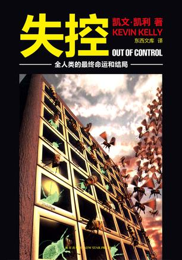

是北辰 2011-04-14 13:36:16
其实本书宣传语有一点点误导读者，因为《失控》并不仅仅是一本互联网著作，它涵盖范围极广，可以从多种角度解读。比如它既解释和指明了社会组织、经济体应该如何组织、运转，又是一本“新生物学”（包括如我们所知的生物学+人造物）著作。当然，网络是这本书最关心的话题，我们的社会、经济、文化、历史及超生命体（生命体以及具有类似生命体特质的人造物，KK称之为超生命体）以及超生命体进化和超生命体间的联系都是网络。
KK在2010年出版的《技术想要什么》中，也明确提出他一个观点：“技术是一种生命体”。KK说：“我认为，技术是生命体的第七种存在。人类目前已定义的生命形态包括植物、动物、原生生物、真菌、原细菌、真细菌，而技术应是之后的新一种生命形态。”
怒啊暖蓝天 2016-01-31 00:46:42
这本书沿袭了林先生一贯的文风：淡。然而淡淡的文字中却透出令人回味无穷的滋味。全书分为六辑：身心安顿，烦恼平息；放下过后更澄明；心若香茗，静听花开；处处莲花开；以爱为灯；总有群星在天上。
林先生是善于观————心有幻想系过生活察乐于思考的人，再加上人生阅历丰富，并且对于禅学、佛学很有研究，造诣很深。因此造就了林先生独特的文风，书中让人读来仿佛若醍醐灌顶的语句俯拾即是。
下面是一个表格
| 表头 | 表头 | 表头 |
| 表内容单元格 | 表内容单元格 | 操作 |
| 表内容单元格 | 表内容单元格 | 操作 |
| 总计 | 1000 | |
|---|---|---|